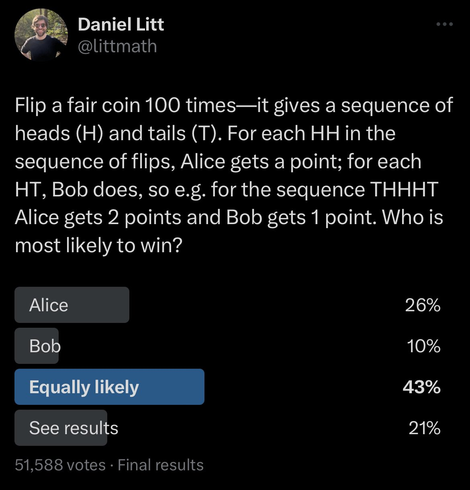
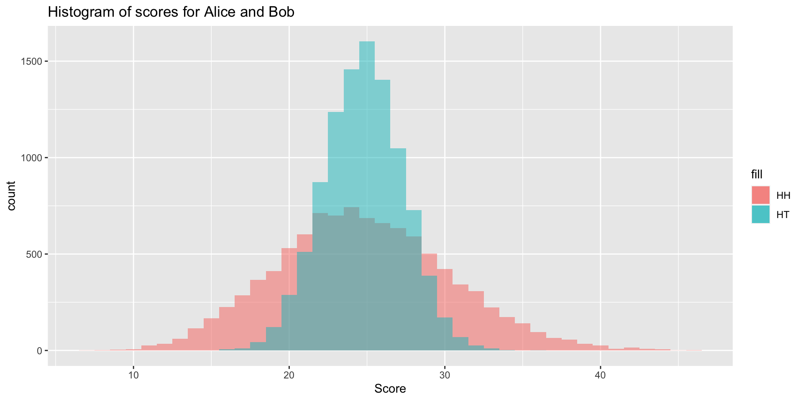

[1] 1 1 2 5 3 3 3 0 0 6r, p, d, and q functionsreplicate()We have already seen a number of functions for generating random variables such as sample() and rnorm().
Today, we will expand on these functions and related functions for studying random variables and begin using them to write various simulations.
Remember that we can use the sample() function as follows to draw at random from a finite set with and without replacement:
What if we want to generate \(n\) samples from a normal distribution? Or a binomial distribution?
Can we write code to simulate this game?
What if we want to simulate this game many times? One approach is to wrap our code in a function, which we can run many times.
run_one_sim <- function(seed, n) {
set.seed(seed)
flips <- sample(x = c("H", "T"), size = n, replace = T)
HH_score <- 0
HT_score <- 0
for (i in 2:n) {
if (flips[i-1] == "H" & flips[i] == "H") {
HH_score <- HH_score + 1
}
if (flips[i-1] == "H" & flips[i] == "T") {
HT_score <- HT_score + 1
}
}
return(list(HH = HH_score, HT = HT_score))
}
# run 100000 simulations with n = 100
results <- lapply(1:10000, run_one_sim, n = 100)
HH_scores <- sapply(results, function(x) x$HH)
HT_scores <- sapply(results, function(x) x$HT)Why does Bob win more often? Intuitively, both “HH” and “HT” are equally likely when we flip a fair coin twice.
Here’s a histogram of Alice and Bob’s scores across the simulations. What do you notice? How might this explain our results?
r, p, d, and q functionsWhat if we want to generate \(n\) samples from a normal distribution? Or a binomial distribution?
R provides functions for working with a variety of probability distributions. For most distributions, there are four functions: r, p, d, and q. As an example, let’s look at the normal distribution.
rnorm() can be used to generate n random observations from a normal distribution:
r, p, d, and q functionspnorm() can be used to compute the distribution function at a value q. In other words, if \(Z\) is a standard normal, pnorm returns the value of \[F(q)= P\left(Z \leq \frac{q-\mu}{\sigma}\right)\]
r, p, d, and q functionsqnorm() can be used to compute the quantile function at a percentile p. In other words, if \(Z\) is a standard normal the quantile function returns the value \(x\) such that \[P\left(Z\leq \frac{x-\mu}{\sigma}\right)=p\]
r, p, d, and q functionsdnorm() can be used to compute the density function at a value x: \[ f(x)={\frac {1}{\sigma {\sqrt {2\pi }}}}\exp\left\{-{\frac {1}{2}}\left({\frac {x-\mu }{\sigma }}\right)^{2}\right\}\]
Create a histogram of 1000 samples from a normal distribution with mean 10 and standard deviation 20.
Suppose we perform a two-sided hypothesis test using a normal distribution and obtain a z-score of 1.24. How would we compute the p-value?
Suppose we perform a two-sided hypothesis test using a normal distribution and obtain a z-score of -2.12. How would we compute the p-value?
r, p, d, and q functions: binomial distributionPractice with the rbinom(), pbinom(), dbinom() and qbinom() functions:
If I flip a coin with probability of heads = 0.6 ten times, what is the probability of observing exactly 6 heads?
If I flip a coin with probability of heads = 0.6 ten times, what is the probability of observing 6 or fewer heads?
Consider an experiment where you flip a coin with a probability of heads = .6 ten times. Simulate this experiment 1000 times and create a histogram of your results.
Remember that set.seed() can be used to ensure that you obtain the same results each time you run your code.
For example, if you include the command x <- rnorm(1) in an .Rmd document with running set.seed(), each time you knit, you will produce a different value of x.
Monte Carlo methods or Monte Carlo experiments use repeated random sampling to obtain numerical results or to approximate quantities of interest.
Monte Carlo experiments are often used to:
Suppose \(X\sim N(0, 1)\). What is \(E(e^X)\)?
We could use the change of variable formula to compute the expectation. Or we could use simulation to approximate this quantity. Asymptotic analysis is needed to study the convergence of our approximation.
Suppose \(X_i\sim \mathrm{Exponential}(1)\) for \(1\leq i\leq n\), for some \(n\).
set.seed(1022)
n_sim <- 1000
n <- 10
maxes <- numeric(n_sim)
for (i in 1:n_sim) {
maxes[i] <- max(rexp(n, rate = 1))
}
mean(maxes)[1] 2.931317What about for \(n=100\)? Should the expected maximum be larger or smaller?
replicate() for repeated evaluationIn the previous code, we have been using for loops, which explicitly and repeatedly change global variables.
We can alternatively use the replicate() function to repeatedly evaluate an expression and in particular to repeatedly generate data. The data will be automatically organized into a matrix or vector.
replicate() for repeated evaluationFor example, we can repeatedly generate n exponential random variables:
[,1] [,2] [,3] [,4] [,5] [,6]
[1,] 1.13043124 0.1479812 2.2223548 2.1268942156 2.39868030 0.14031279
[2,] 0.55534004 1.9936832 1.5308543 0.3856013802 0.27843227 0.07257534
[3,] 4.04774410 1.5802471 0.8427089 0.0285170421 0.08422752 0.16672644
[4,] 0.95041912 1.2540541 2.3257087 1.2683416223 2.16567578 0.17816958
[5,] 1.58876652 1.6758615 1.4261630 0.2769027893 0.74726688 0.17021181
[6,] 1.99796987 2.0187209 2.4609051 0.2171987002 0.35444081 0.24326570
[7,] 1.14231095 0.7548254 0.3966859 1.9520977567 0.15842032 1.31846979
[8,] 0.02341325 1.8892792 2.2973738 0.3193784612 3.23298183 0.70573159
[9,] 0.52699221 1.0601018 1.3775838 0.0007783933 1.68575293 0.21282549
[10,] 0.02605074 1.1210718 7.7896914 0.9947959780 1.43672665 0.03251952
[,7] [,8] [,9] [,10]
[1,] 0.37598461 1.5698594 0.48767041 0.25788083
[2,] 1.54188526 0.5463632 0.03341924 3.22056431
[3,] 2.28019306 1.8544470 2.48718778 0.33689904
[4,] 1.92829873 0.5781632 1.08695817 1.36571108
[5,] 0.61021502 0.2839260 3.15368645 0.02273778
[6,] 0.91375634 0.3061268 0.79635850 2.84436475
[7,] 2.00932145 2.6931977 1.10894887 0.40095700
[8,] 0.06227634 0.7167511 0.18378884 1.30463719
[9,] 0.06959291 0.1803800 0.02571177 0.87495361
[10,] 5.63161431 0.2733862 0.06480147 0.19743542replicate() for repeated evaluationAlternatively, we can repeatedly generate n exponential random variables and then take their maximum:
replicate() for repeated evaluationUsing replicate(), the previous simulation is just:
We can repeat this for many different values of n.
Note that we can write the maximum of exponentials simulation using replicate():
It turns out that \(\mathrm{max}(X_1,\ldots, X_n)\) can be modeled using a Gumbel distribution (after being transformed). Below, we plot the empirical mean and approximate the theoretical expectation (for large \(n\)).